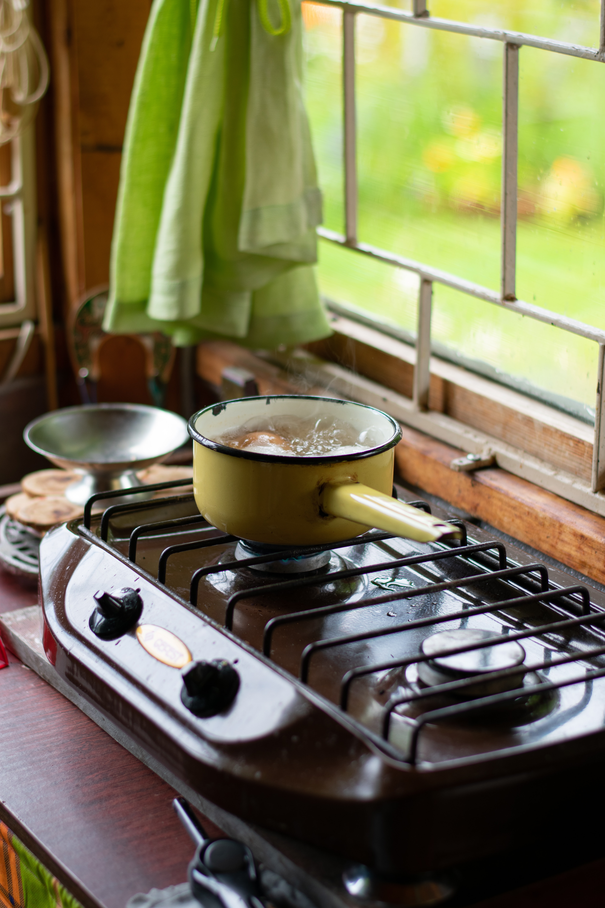
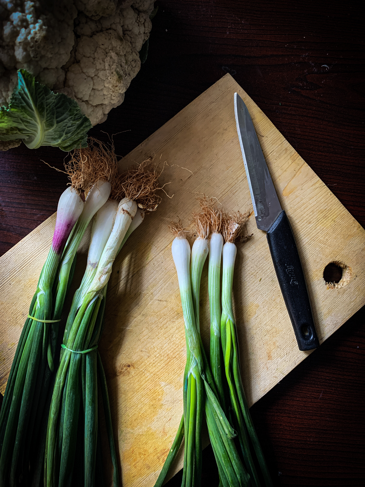
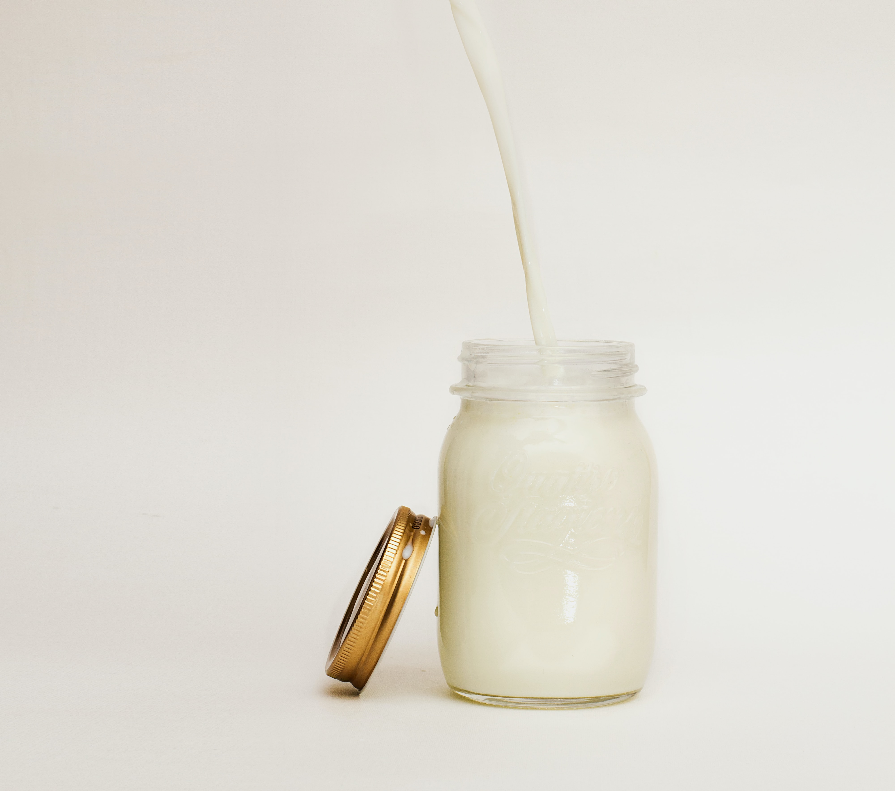
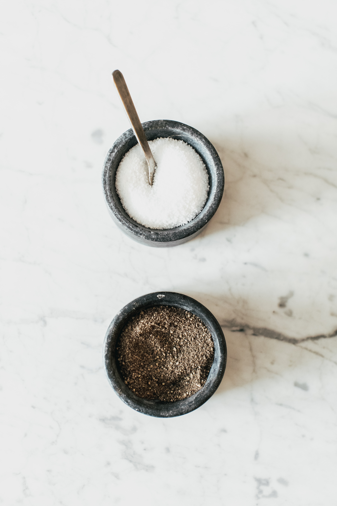
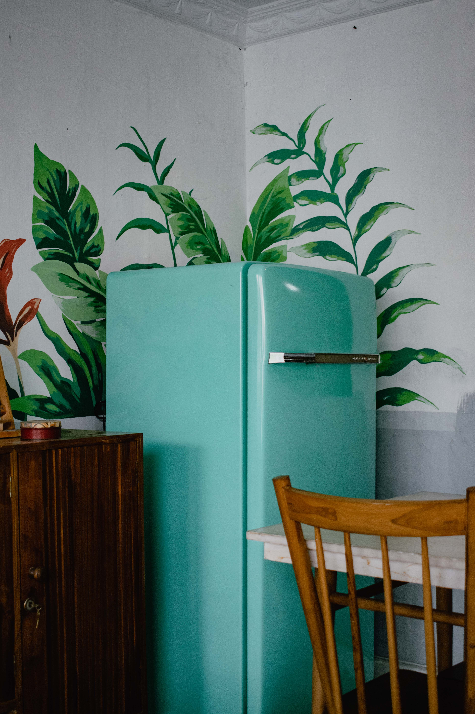

Valters Hūns
Publish date: 2023-04-23
Prep Time: 30 minutes
Cook Time: 20 minutes
Total Time: 50 minutes
Servings: 4
Category: Soup
Cuisine: Latvian
Estimated cost: 15 EUR
Suitable for Low Fat Diet
Boil 5 potatoes until they are soft. At the sime time cook 3 hard boiled eggs.
Chop all of the ingredients into small pieces/cubes.
Put ingredients into one bowl and add kefir. Mix all the ingredients.
Add spices of your liking, for example, salt, pepper, mustard, horseradish etc.
Leave the soup in refrigerator for about 25-30 min for better taste.
